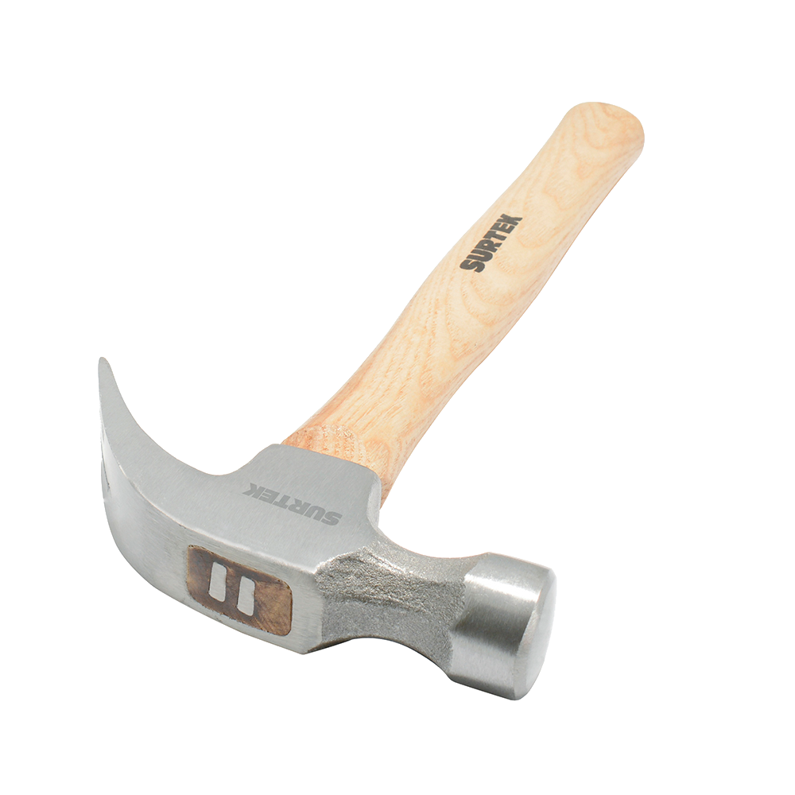

 |
Martillo Surtek 416 de Uña Curva 16oz$115DescripciónEste martillo de uña de 16 oz es la herramienta ideal para trabajos de carpintería, construcción y bricolaje. Fabricado con cabeza de acero forjado para mayor resistencia y durabilidad, cuenta con un mango ergonómico antideslizante que proporciona un agarre cómodo y seguro. Su diseño versátil permite clavar y extraer clavos con facilidad, ofreciendo precisión y eficiencia en cada golpe. ¡Un imprescindible en cualquier caja de herramientas! |
|---|